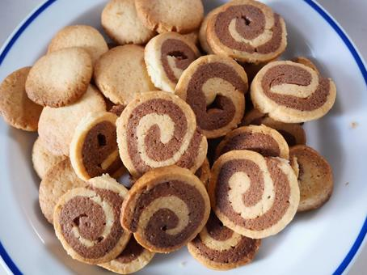
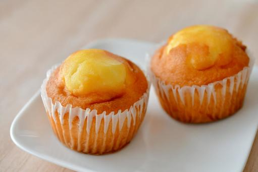
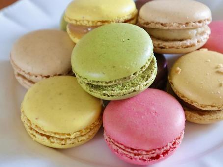
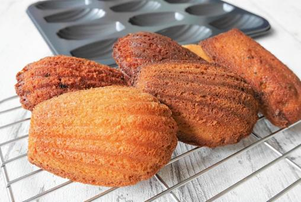

クッキー
小麦とバターのみのシンプルなものからアイシングクッキーなどカラフルなものまでたくさんの種類があります。
サクサクとした食感でバターのいい香りがします。
材料
- 無塩バター 50g
- グラニュー糖 50g
- 卵黄 1個
- 薄力粉 120g
作り方
- バターを常温に戻し、クリーム状になるまで混ぜる。
- グラニュー糖を加えてよく混ぜる。
- 卵黄を加え、さらに混ぜる。
- 薄力粉をふるい入れ、さっくりと混ぜる。
- 生地をまとめ、冷蔵庫で30分休ませる。
- 生地を伸ばして型で抜き、180℃のオーブンで15分焼く。
マフィン
マフィンは生地を円形のカップに入れた焼き菓子のことでカップケーキとも呼ばれます。
ドライフルーツやチョコレートなどを入れてもおいしくアレンジができます。
材料
- 小麦粉 200g
- 砂糖 100g
- 溶かしバター 100g
- 卵 2個
- 牛乳 100ml
- ベーキングパウダー 小さじ1
- バニラエッセンス 小さじ1
- 好きなフルーツやナッツ（オプション）
作り方
- 小麦粉、砂糖、ベーキングパウダーをボウルに入れて混ぜる。
- 別のボウルに卵を割り入れ、溶かしバター、牛乳、バニラエッセンスを加えて混ぜる。
- 液体のミックスを乾燥したミックスに注ぎ、混ぜる。混ぜ過ぎないように注意する。
- カップケースに生地を流し込み、オーブンで180°Cで約20〜25分焼く。
マカロン
卵白やアーモンドプードルなどを混ぜて作るもので失敗をとてもしやすいです。
色々なフレーバーがあり韓国のトゥンカロンも人気です。
材料
- アーモンドパウダー 100g
- 粉糖 100g
- 卵白 2個
- グラニュー糖 30g
- 食用色素（お好みで）
作り方
- アーモンドパウダーと粉糖をボウルにふるい入れて混ぜる。
- 別のボウルで卵白を泡立て、泡立てている途中でグラニュー糖を少しずつ加える。
- 卵白がツノ立つまで泡立て、メレンゲがしっかりとした硬さになったら、食用色素を加えて混ぜる。
- 半分に分けたアーモンドパウダーと粉糖のミックスを卵白に加え、ゴムべらで優しく混ぜる。
- 生地を絞り袋に入れ、ベーキングシートを敷いた天板に円形に絞り出す。
- 表面にできた気泡を叩きつけ、室温で約30分放置して表面が乾燥するのを待つ。
- オーブンを160°Cに予熱し、マカロンを入れて約12〜15分焼きます。
マドレーヌ
フランス発祥のお菓子で生地を貝殻の形の型にいれて焼くのが特徴的です。
ふわふわとした食感やレモン汁の程よい酸味も特徴的です。
材料
- 薄力粉 100g
- ベーキングパウダー 小さじ1
- 砂糖 70g
- 卵 2個
- バター（溶かして冷ましておく） 100g
- バニラエッセンス 少々
- レモンの皮（お好みで）
作り方
- ボウルに卵と砂糖を入れて泡立て、白っぽくなるまで混ぜる。
- 溶かして冷ましたバターを加えて混ぜ、バニラエッセンスを加える。
- 薄力粉とベーキングパウダーをふるい入れ、ゴムべらでさっくりと混ぜる。
- レモンの皮を摩り下ろして生地に加え、なじませる。
- 生地をラップで覆って、冷蔵庫で1時間ほど寝かせる。
- マドレーヌ型に生地を流し込み、180°Cのオーブンで約15分焼く。